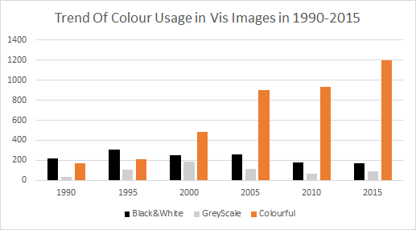
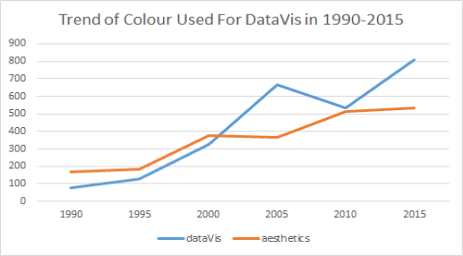
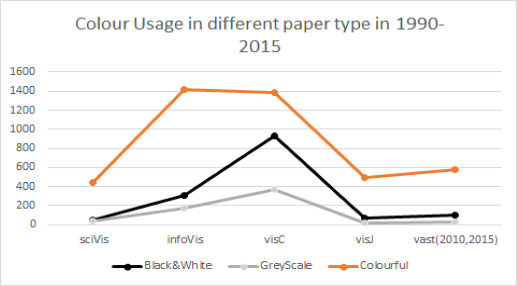
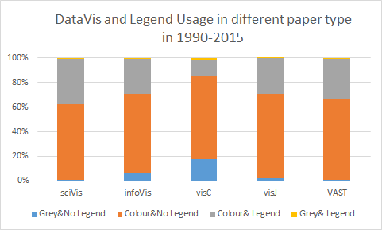
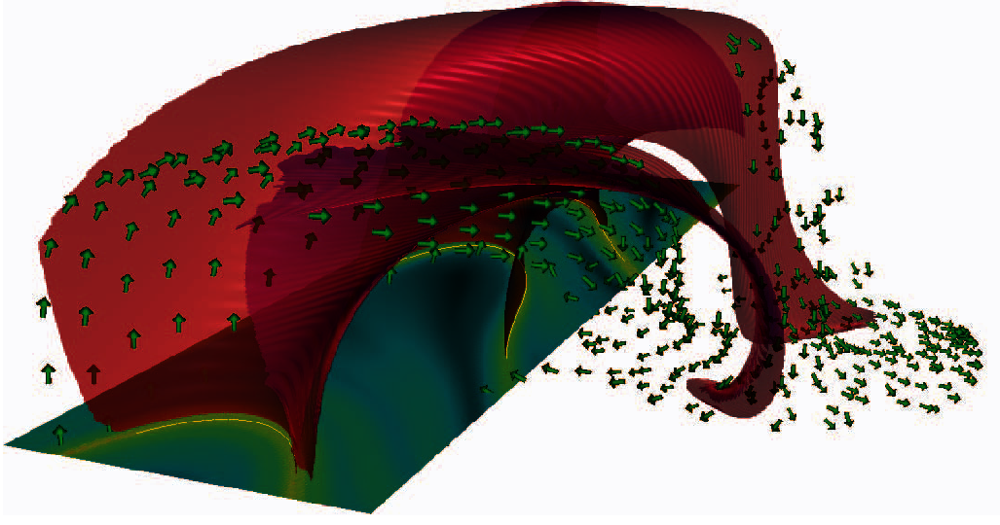
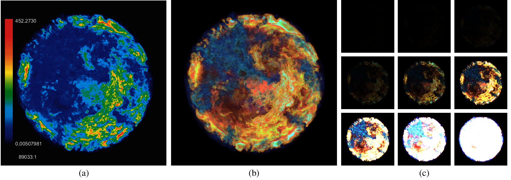
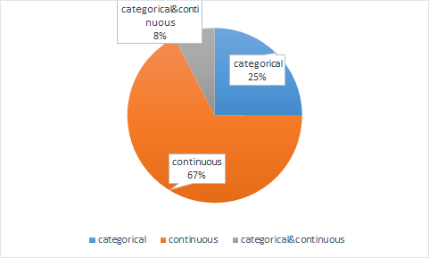

Introduction to ColorVisualization:
Colour Explorer is used to work with the
VIS30K dataset, a dataset of visualization images across time, from scientific papers, in order to analyse the colour used in recent 30 years.
We would like to analyse its usage in the perspective of monochrome, usage, colour legend, colour mapping and colour numbers.
How are the colors distributed over the years?


From the annotated result, we could see that the coloured images' number has boosted in the recent 30 years and its usage in data visualization gradually exceeds its usage for aesthetics.
How are the colour properties of colours distributed in different paper set?


VisC type has the highest proportion of using black & white and grey scale images. The infoVis type has the highest proportion of using coloured images.
Most images used for data visualization don't their colour legend shown, especially for the VisC type, the colour legend's missing proportion has exceeded 80%.
And SciVis type has the most proportion of images that has the colour legend.
Other observations
-
In recent years some images have the colour mapping both continuous and categorical.
Example:

-
Most colour legend adopted a rainbow colour scheme.
Example:

-
Most images used for data visualization has continuous colour mapping.
Example:

What image (figure and table) data can you find here?
Images from every year of the IEEE VIS conferences:
- VAST: 2006-2020
- InfoVis: 1995-2020
- Vis: 1990-2013
- SciVis: 2012-2020
How to cite this work?
For dataset, please cite:
Jian Chen, Meng Ling, Rui Li, Petra Isenberg, Tobias Isenberg, Michael Sedlmair, Torsten Möller, Robert S. Laramee, Han-Wei Shen, Katharina Wünsche, and Qiru Wang.
VIS30K: A Collection of Figures and Tables from IEEE Visualization Conference Publications. IEEE Transactions on Visualization and Computer Graphics (2021).
For colour results, no citations required at present.